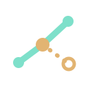

Community process
This website, the public collaboration repository, and its proposal guidance can be read and discussed.

Causals LabJoin the work ↗About Causals Lab
Causals Lab studies evidence-aware graph construction and graph-and-language-model reasoning. It invites scrutiny and contribution without pretending that every artifact has the same release terms.
Our working principles
We aim to make claims traceable, relationship semantics explicit, revisions reviewable, and disagreement visible. A useful answer should show why it was reached and what would change it.
Contributions should be tied to a proposal, supporting material, a review decision, and a versioned record. Public visibility is not the same as an open-source license or unrestricted reuse.
Publication status
This website, the public collaboration repository, and its proposal guidance can be read and discussed.
Graph snapshots, API access, evaluation tasks, annotations, licenses, and attribution terms will be announced separately.
The team's graph-building algorithms and operational implementation are not part of the public repository.
For the detailed current position, see Publication and licensing status ↗.
An open invitation